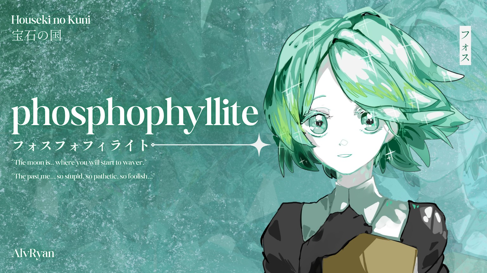
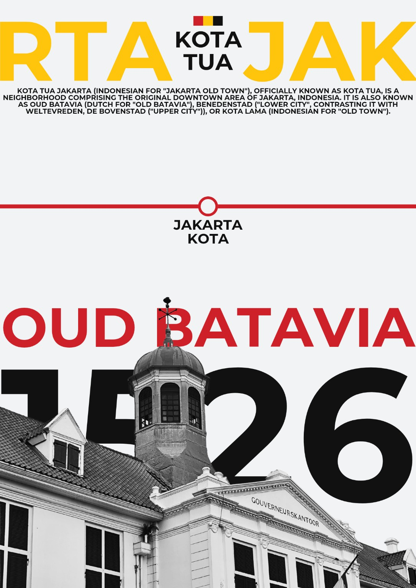
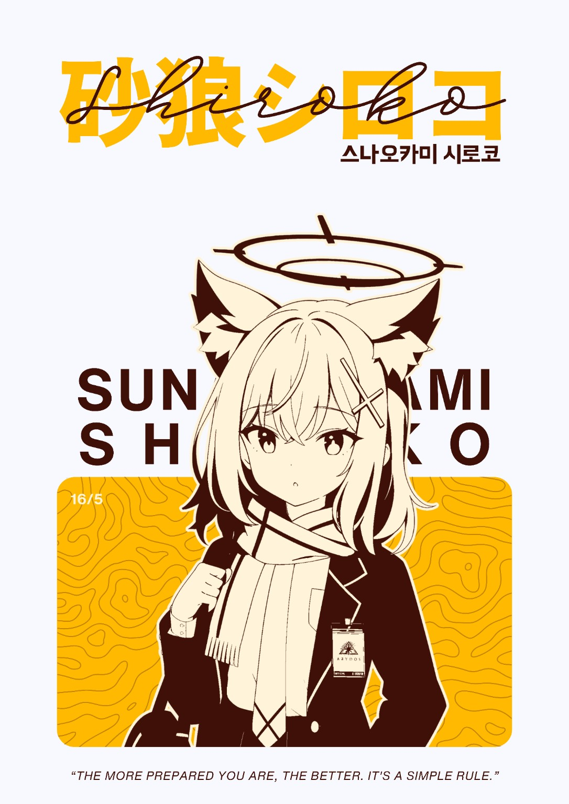
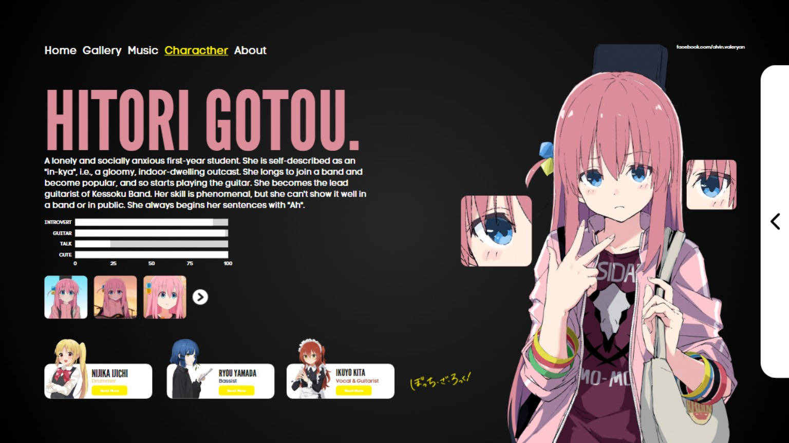
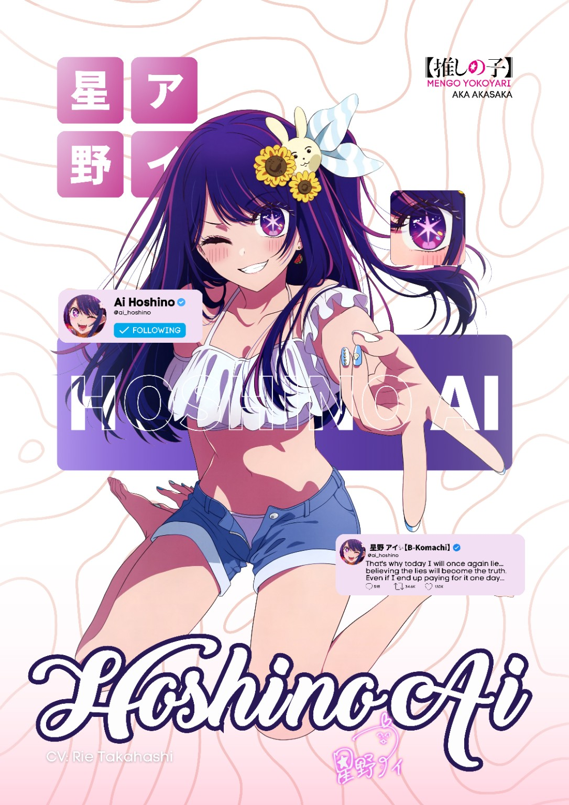
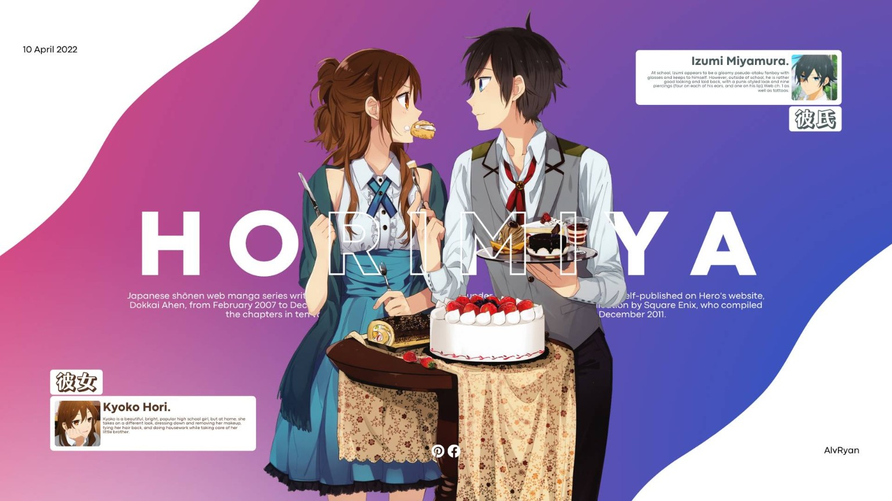
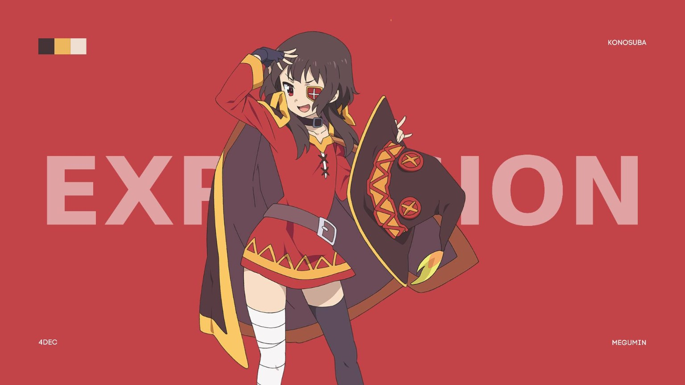

Cultural Program Leadership
Experienced in leading student-based cultural initiatives and Japan-related community programs.
Portfolio
International Relations Student · Cultural Program Leader · Visual Communication Enthusiast
I build and support cultural programs, student communities, and creative communication projects through leadership, event coordination, and visual design.
About
I am an International Relations student at President University with experience in managing student organizations, cultural programs, multimedia documentation, and cross-campus collaboration.
My work combines structured planning, creative production, and team coordination. Through President University Nippon Community, I help create spaces where students can express their interest in Japanese pop culture while developing meaningful organizational and community experiences.
Key Strengths
Experienced in leading student-based cultural initiatives and Japan-related community programs.
Managed cross-campus collaboration and hybrid event execution from planning to evaluation.
Created poster, layout, and character-based visual works with a focus on composition and typography.
Interested in building programs that connect students through culture, creativity, and shared interests.
Experience
Lead a 60+ member organization focused on Japanese pop culture, member expression, internal coordination, and student-led cultural activities.
Managed a cross-campus cultural exchange between President University Nippon Community and BINUS Nippon Club, coordinating 30+ committee members from planning to post-event evaluation.
Led a 6-member creative team for a hybrid awareness program for high school students, supporting visual production, content materials, and documentation for online and onsite activities.
Created design, content, and documentation materials to support organizational communication and activities.
Projects
Cross-campus collaboration event connecting Japanese culture communities from President University and BINUS University.
Hybrid SDGs awareness program for high school students involving online and onsite outreach activities.
Student community leadership focused on Japanese pop culture, youth expression, and member participation.
Early web design project demonstrating interest in digital presentation and structured visual communication.
Design Works
A collection of poster, typography, and layout-based design explorations created using Canva, focusing on visual composition, color palette, and Japanese pop culture-inspired aesthetics.

A fan-based visual poster exploring texture, large-scale typography, asymmetrical layout, and atmospheric color composition.

A poster design exploring bold typography, historical visual identity, and editorial-style composition inspired by Jakarta Old Town.

A character-based poster exploring limited color palette, clean layout, and Japanese-inspired typography composition.

A web-inspired character profile layout exploring navigation structure, information hierarchy, and visual storytelling.

Fan-based character layout exploring layering, social media elements, and bright color treatment.

Visual storytelling layout focused on character placement, soft contrast, and wide composition.

Minimalist character poster exploring bold color blocking, negative space, and simple typography.
Skills
A practical skill set for student organization leadership, documentation, administrative work, and public-facing program execution.
Achievements
National general knowledge competition.
Essay competition for Indonesian participants.
Scholarship recognition for university studies.
Scholarship recognition.
Contact
Open to internship, organization partnership, youth engagement, and Japan-related cultural initiatives.